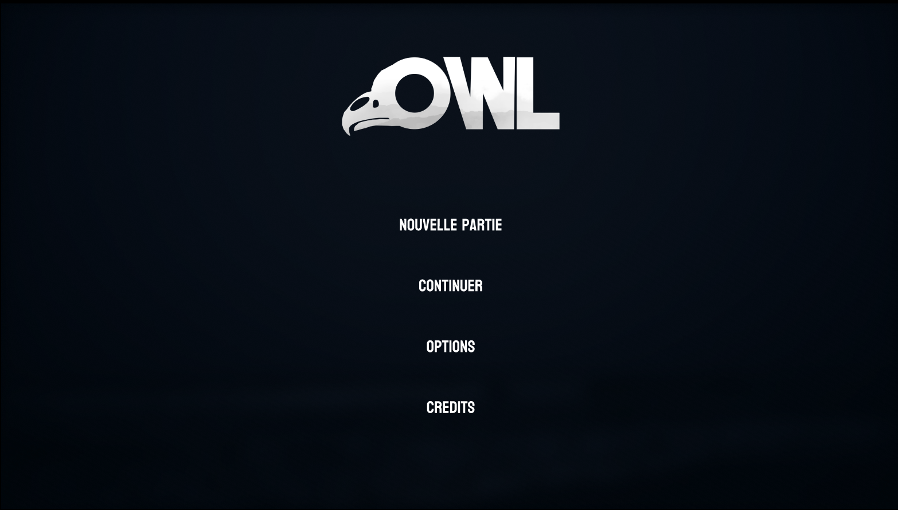

Pour mon projet de portfolio, j'ai voulu mettre en avant un projet réalisé hors du cadre universitaire afin de montrer ma créativité et mon expérience dans ce domaine.
En effectuant des recherches sur des travaux liés au CONCEPT ART et au DIGITAL ART, je suis tombé sur une vidéo présentant une technique souvent utilisée pour réaliser des concepts art ou des peintures numériques, appelée le PHOTOBASHING.
Cette technique consiste à utiliser des éléments, tels que des photos par exemple, et à partir de ces derniers, à les disposer d'une manière spécifique pour créer une mise en scène ou même des personnages, tout en repassant dessus avec un pinceau pour créer une illustration plus détaillée et artistique.
J'ai donc tenté de réaliser une illustration sur PHOTOSHOP qui s'inspirerait de cette méthode, à l'aide de tutoriels et de guides qui montrent la manière dont il faut procéder pour réaliser ce genre de travaux.
Pour cette première illustration utilisant la méthode du PHOTOBASHING, j'ai choisi de m'inspirer de KINGDOM HEARTS IV, un jeu faisant partie d'une saga à laquelle j'ai beaucoup joué et dont j'attends la sortie avec impatience.
Pour parvenir à réaliser cette affiche, j'ai utilisé de nombreuses photos prises dans les rues de TOKYO. Je les ai ensuite assemblées et retouchées pour que l'environnement soit le plus visuellement attrayant possible.
J'ai par la suite ajouté un filtre de découpe sur l'ensemble de l'illustration pour obtenir un rendu homogène.
Cliquez sur l'image pour l'agrandir
Pendant ma deuxième année en BUT MMI, j’ai eu l’occasion d’améliorer mes compétences en Design Graphique, que j’avais déjà acquises lors de ma toute première année au sein de la formation, grâce notamment à un projet de charte graphique.
Étant donné que je suis actuellement dans le parcours Développement Web, les cours sont plus consacrés à la création d'applications et de sites web qu'à des projets en lien avec le domaine du design graphique.
Pour mettre en avant mes compétences dans le domaine de la conception graphique et autres éléments visuels, j’ai donc décidé de créer un logo, ainsi qu’une charte graphique à l’aide des logiciels de la suite Adobe : Illustrator, Photoshop et InDesign.
Le logo est celui d’une marque fictive de produits de luxe.
Voir la charte graphique complète (PDF)
Cliquez sur l'image pour l'agrandir
Même avant de rejoindre cette formation, j'ai toujours été plus intéressé par la
partie Création Numérique/Design Graphique qu'elle propose.
Cela ne m'a cependant pas empêché de développer
des compétences dans la partie Développement Web de la formation
et afin de montrer celles que je possède,
j'ai pris la décision de réaliser mon portfolio
entièrement en HTML et CSS.
J'ai également utilisé JavaScript pour toute la partie qui concerne les interactions du site, telles
que les images cliquables et les boutons.
Cliquez sur l'image pour l'agrandir
Ce poster rend hommage au métier de game designer, souvent considéré comme le cœur créatif du développement vidéoludique. En jouant avec des codes graphiques rétro et contemporains, il symbolise le rôle fondamental du game designer : celui qui imagine, structure et fait naître l’univers du jeu.
Le game designer ne se contente pas de créer des mécaniques : il conçoit des expériences, équilibre des systèmes, définit des règles, et construit des mondes où le joueur devient acteur.
Il travaille à la frontière entre la narration, le gameplay et l’émotion, en collaborant étroitement avec artistes, programmeurs et designers UX/UI.
Chaque élément du poster, des personnages iconiques aux logos des plateformes, évoque la richesse et la diversité des univers vidéoludiques.
Ce projet graphique réalisé sous photoshop a pour objectif de mettre en lumière un métier encore méconnu, tout en illustrant ma sensibilité et ma passion pour le jeux vidéo.
Cliquez sur l'image pour l'agrandir
Ayant comme projet professionnel celui de devenir un GAME DESIGNER et étant passionné par la modélisation 3D, j'ai pris moi-même la décision de modéliser mon propre personnage en 3D afin d’acquérir de nouvelles compétences dans ce domaine et de développer ma créativité.
Pour mener à bien ce projet, j’ai d’abord cherché de l’inspiration sur des sites tels que ArtStation pour trouver à quoi devraient ressembler les différentes parties du corps du personnage.
J'ai ensuite utilisé le logiciel BLENDER pour réaliser les différentes parties du corps du personnage ainsi que rajouter les textures nécessaires pour le rendu final.
Dans le but de pouvoir obtenir les formes voulues, j’ai attribué diverses caractéristiques aux différents objets tels que des effets miroir pour copier la forme d’un objet sur un axe ou encore des effets de subdivisions pour améliorer la résolution des différentes parties du personnage et autres.
Ce projet m’a permis de mieux me familiariser avec le logiciel, notamment en ce qui concerne savoir utiliser les bon modifiers afin de créer les formes souhaitées via les différents modifers mis à disposition.
Lien du modèle 3D
Cliquez sur l'image pour l'agrandir
Dans le secteur du jeu vidéo, l’une des qualités les plus importantes est sans aucun doute la créativité. C’est elle qui permet de concevoir un univers unique et immersif, essentiel à l’expérience de jeu.
Pour imaginer et visualiser l’univers d’un jeu, on utilise ce que l’on appelle des concept arts. Ces illustrations servent à explorer différentes ambiances et environnements dans lesquels le jeu pourrait se dérouler.
Afin de développer ma propre créativité, j’ai choisi de réaliser un concept art représentant un univers sombre et médiéval, habité par deux personnages.
L’un d’eux est un personnage en 3D que j’avais précédemment modélisé avec Blender, dans le cadre de l’apprentissage et du perfectionnement de mes compétences en modélisation 3D.
Il s’agit de ma première initiation à ce type de travaux.
Lien vers mon concept art
Cliquez sur l'image pour l'agrandir

Pour offrir une expérience utilisateur réellement satisfaisante dans un jeu vidéo, il est fondamental que le joueur puisse interagir avec les éléments du jeu de manière naturelle et intuitive. Chaque action, chaque bouton, chaque retour visuel doit être pensé pour faciliter la compréhension et éviter toute confusion. L’objectif est que le joueur soit immergé dans l’univers du jeu, sans être freiné par une interface complexe ou mal conçue.
C’est pour cette raison que le design UX est important au sein d’un jeu.
Il ne s’agit pas seulement de créer une interface agréable visuellement, mais de penser l’expérience globale de l’utilisateur : comment il navigue, comment il comprend les mécaniques, et comment il interagit avec l’environnement.
Afin de mieux comprendre ces enjeux et de développer mes compétences en UX/UI design, j’ai commencé à concevoir le prototype de ma première interface utilisateur (UI) pour un concept de jeu original que j’ai imaginé moi-même.
cc
Ce projet m’a permis de réfléchir à la manière dont les menus, les boutons, les icônes et les retours visuels peuvent être organisés pour offrir une navigation fluide, tout en restant cohérents avec l’univers graphique du jeu.
J’ai également travaillé sur l’ergonomie, en veillant à ce que chaque élément soit accessible et logique dans son positionnement.
Cette première approche du design d’interface au sein d’un jeu m’a permis de mieux comprendre l’équilibre qu’il doit y avoir entre la créativité visuelle et l’expérience utilisateur, deux aspects essentiels pour concevoir une interface efficace et fonctionnelle dans le domaine du jeu vidéo.
Lien Figma vers ma maquette UI
Cliquez sur l'image pour l'agrandir